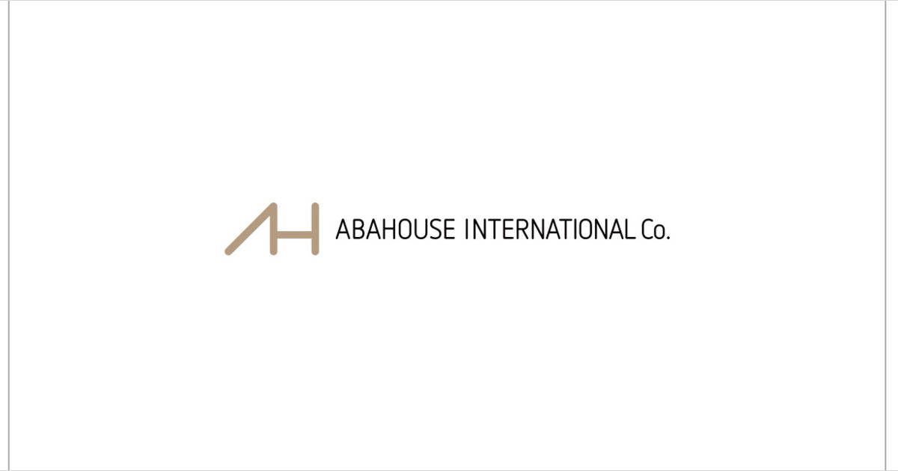
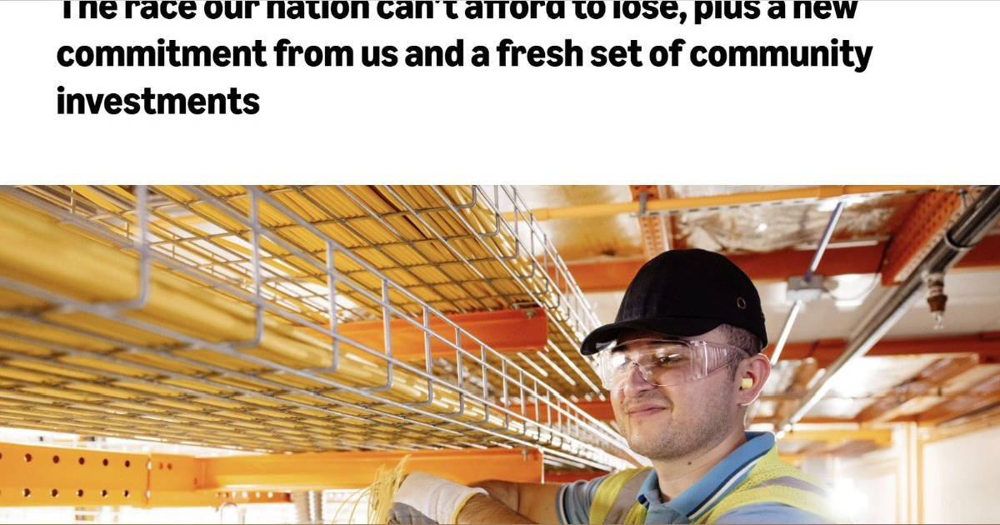
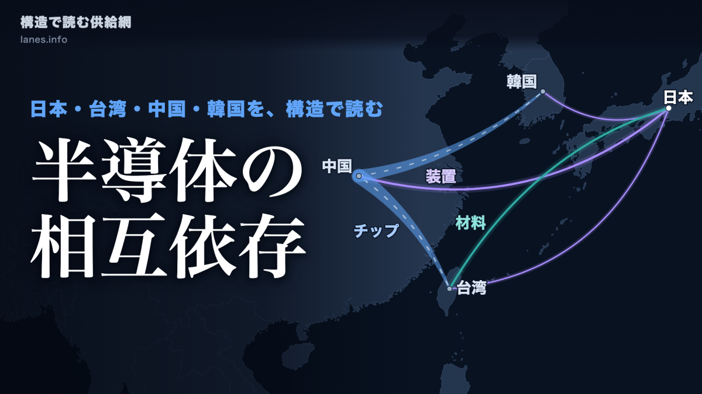
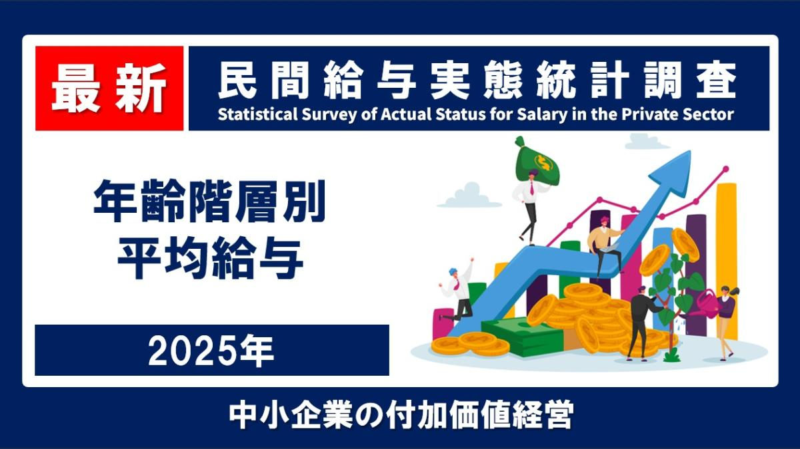

01「アバハウス」全顧客の情報漏えいか 会員・受注DBに不正アクセス
発行日時：2026年10月3日 08:39 JST

あなたに関係ありそうな理由
入居者・取引先・注文者などの個人情報を扱う業務で、保管範囲、通知、再発防止を一つの運用として見直す材料になります。
概要
アパレルのアバハウスインターナショナルで、会員情報と受注情報を含むデータベースへの不正アクセスが起き、全顧客の情報が漏えいした可能性があると判明した。発端は、利用者から「不審な返金メールが届いた」という報告を受けたことだった。会社は9月27日から28日にかけて不正なログインを確認し、プログラム上の問題を悪用された可能性があるとして調査を始めた。10月2日には会員へ案内を出し、メールに記載されたリンクを開かないよう注意を促している。記事は、攻撃が発覚してからの技術調査と、利用者に今必要な注意喚起が並行する状況を伝えている。
漏えいした可能性があるのは、会員ID、氏名、住所、電話番号、メールアドレス、生年月日、性別に加え、注文内容などだ。クレジットカード情報は決済代行会社が管理しており、同社の会員・受注データベースには保有していないと説明した。一方で、退会済みの利用者も、過去の注文情報が残っていれば対象になり得る。今回の出来事は、攻撃を完全に防ぐことだけでなく、何の情報をどこまで保持するかが被害範囲に直結することを示す。保存期間、アクセス権限、外部委託先との分担を、事故の後ではなく日常の設計として確認する必要がある。
表示コメントでは、個人情報をため込みすぎないこと、外部からの監査や調査の信頼性、利用者に分かる形で経緯を示すことが論点になった。実務で重要なのは、漏えいの有無をすぐ断定できない段階でも、何が確認済みで、どの行動を避けるべきかを明確に伝えることだろう。受け手はメールの正しさを見分けにくく、事業者の公式案内へたどり着ける導線が必要になる。顧客情報を扱う側は、データを集める目的、不要になった情報を消す基準、緊急時の連絡文面を平時にそろえておきたい。カード情報を自社で保持しないという説明も、利用者を安心させるだけでなく、どの主体がどの情報を持つかを切り分ける意味がある。委託先を含めたデータの棚卸しが、通知の速さを支える。組織横断で通知と復旧の訓練を定期的に行うことも、実際の初動を左右する。漏えい対策をセキュリティ部門だけの課題にせず、保管と顧客対応を含めた経営上の管理として考える記事である。
仕事や会話で使える一言
「情報漏えい対策は、漏らさないことだけでなく、残さない設計まで含めて考えたいですね。」
NewsPicks原文を読む
02Amazon、データセンター批判に反論 10億ドル超の地域支援策も発表
発行日時：2026年10月3日 17:52 JST

あなたに関係ありそうな理由
データセンターや大型開発の受け入れを考える際、雇用や税収だけでなく、水・電力・地域への説明責任を同じ表で見る視点になります。
概要
Amazon Web Servicesのマット・ガーマンCEOが、データセンター建設への反発が強まる米国の地域社会に対し、業界の説明不足を認めつつ反論した。記事によると、Gallupの調査では、地元でのデータセンター建設に反対する回答が71％に達した。各地では建設を一時停止する動きが100件を超え、住民は電力料金、水利用、景観や生活環境への影響を懸念している。AI向けの計算需要が増えても、建物を造れば自動的に歓迎されるわけではない。AWSはデータセンターを道路や送電網のようなインフラと位置づけ、地域の理解を得るための具体策を示した。
水利用について同社は、データセンターの1日当たりの使用量は約1万3000ガロンで、42世帯分に相当する一方、ゴルフコースはその約200倍を使うと説明した。ただし、比較だけで懸念が解消されるわけではない。水が少ない地域では、総量よりも取水する場所と時期、再利用の方法が問われる。AWSは今後、政府との秘密保持契約を結ばず、エネルギーと水の利用状況を毎年開示する方針を示した。反対の背景にあるのは、どの程度の負担が誰に生じ、事業者の説明をどこまで検証できるかという問題である。
あわせてAmazonは今後5年間で10億ドル超を地域支援へ投じ、電気工事やIT分野の無償教育、住宅の省エネ改修、地域団体への助成を行うと発表した。建設時の雇用だけでなく、稼働後の地域経済に何を残せるかを示す狙いがある。表示コメントでも、工事の雇用と運用段階の雇用を分けて見ること、周辺インフラの増強が必要だという指摘があった。地域側にとっては、企業の投資額ではなく、電源・水・道路の整備費、公開データ、教育や雇用の約束を契約や計画として確かめることが重要になる。水や電力の利用が計画から外れた場合の是正方法まで示されると、負担と便益を比較しやすい。自治体や住民が運用後の数値を比べられる仕組みも欠かせず、その透明性が信頼をつくる。反対か賛成かの二択ではなく、運用後も検証し続けられる条件をつくれるかが焦点になる。データセンターを成長産業として一括りにせず、地域との長期的な負担と利益の配分を問う記事だ。
仕事や会話で使える一言
「大型開発は、投資額よりも地域の負担と検証可能な約束を一緒に見たいですね。」
NewsPicks原文を読む
03【AI企業】肩書きはもう時代遅れだ
発行日時：2026年10月3日 05:30 JST
あなたに関係ありそうな理由
AIを使う小さな組織ほど、肩書きを減らす自由と、誰が意思決定・顧客対応・品質に責任を持つかを両立させる必要があります。
概要
AI企業で、従来の部長、責任者、シニアといった肩書きを求人から外す動きが広がっているというニューヨーク・タイムズの記事である。肩書きが少ない組織は、職務の境界を固定せず、必要な課題に応じて人が動けるように見える。一方で、社外からは誰が何を担っているのかが分かりにくくなる。記事は、肩書きをなくすことを流行として扱うだけでなく、急成長するAI企業が採用競争や組織設計で何を優先しているのかを追う。組織を平らに見せることと、実際の権限や責任が平らであることは同じではない、という問題意識が軸になる。
LinkedInの2025年12月時点のデータでは、求人に肩書きを記さない割合はAnthropicで39％、OpenAIで31％、xAIで26％に達し、前年から50％増えたという。企業側には、細かい役職を並べるより、できることと採用したい成果を示した方が人を集めやすい事情がある。競合へ自社の組織図を知らせないため、あえて肩書きを曖昧にする面もある。かつてBell Labsのような研究組織にも、肩書きより専門性を重んじる文化があった。だが、人数が増え、顧客や規制当局との接点が増えるほど、誰が判断し、誰が説明するのかを曖昧にしたままでは運営しにくい。
表示コメントでは、役割を流動的にすること自体より、案件ごとの責任者と意思決定の経路を追えることが重要だという意見が目立った。少人数のチームでは、一人が営業、開発、導入支援をまたぐことも珍しくない。しかし、顧客情報の管理、品質事故、納期変更などで最後に判断する人まで見えなければ、柔軟さは属人化に変わる。肩書きは組織を硬直させる場合もあるが、責任を消すための装置でもない。職務名を軽くしても、プロジェクトの目的、決裁者、引き継ぎ先を文書で残すことはできる。組織図、連絡先、権限表を対外的な窓口として整えれば、顧客や協力会社も迷わない。変化の早さと、事故時に説明できる状態をどう両立するかが実装上の課題になる。責任が曖昧なまま仕事だけが増えるのを防ぐことにもつながる。AI時代の組織を考えるとき、肩書きの有無より、仕事の境界と説明責任をどこに置くかが問われる記事である。
仕事や会話で使える一言
「肩書きは減らしても、案件ごとの決裁者と説明責任は見える形に残したいですね。」
NewsPicks原文を読む
04【構造で読む供給網 #1】装置は中国へ、ウエハは台湾へ――日本と東アジアの半導体は、どのように繋がっているか
発行日時：2026年10月3日 06:00 JST

あなたに関係ありそうな理由
工場・設備投資・物流を扱うとき、国別の輸出入額だけでなく、水・電力・人材を含む供給網の接続を考える基礎になります。
概要
日本と東アジアの半導体供給網を、貿易データから追う連載の第1回である。記事はCEPIIのBAC Iデータベースと日本の貿易統計を用い、装置、ウエハ、半導体が国境をまたいで移動する構造を可視化した。2024年の日本の半導体製造装置輸出は4兆8038億円で、中国向けが37.9％、台湾向けが25.1％、韓国向けが17.6％、米国向けが8.8％を占めた。日本は完成品だけを輸出する国ではなく、製造の前工程を担う設備や材料を、東アジアの生産拠点へ送り出している。記事は、地図上の国別シェアから供給網の重心を読む。
台湾と中国の間では、半導体そのものや中間財が大きく動く。台湾から中国への半導体輸出は2024年に526億ドルに達したと紹介される。中国が最終組み立てや広い市場を担い、台湾が製造・集積の拠点となり、日本が装置や材料でつながるという単純ではない連鎖が見える。輸出規制や安全保障の議論では、ある国との取引を止めるかどうかに目が向きがちだが、実際には一つの部材や装置が複数の工程を経て別の国へ戻る。国別の貿易額を足すだけでは、供給の代替先や、工程ごとに止まり得る地点は分からない。
表示コメントでは、経済安全保障だけでなく、工場が必要とする水、電力、人材、周辺の物流まで含めて地域にどう接続するかが論点になった。半導体の生産能力を増やしても、装置の納入、技術者の確保、安定したユーティリティーがそろわなければ稼働は続かない。日本の企業や地域が見るべきなのは、自社がどの国へ売るかだけでなく、その先の製造工程がどこにあり、代替の難しい部分がどこかである。例えば設備を代替しても、保守や調整に必要な技能まで移せるとは限らない。港湾や空港の混雑、国境を越える輸送の遅れも工程に影響する。データを定期的に更新し、特定の国・企業・部品への依存度を数量で把握することが、危機への備えになる。短期在庫で埋められない弱点を、先に洗い出しておきたい。輸出統計を起点に、分業の強さと依存の深さを同時に読み取る記事になっている。事業計画では、地政学的な変化を抽象論で終わらせず、装置、部材、輸送、インフラの順に影響を分解して確認したい。
仕事や会話で使える一言
「供給網は国名だけでなく、装置・材料・電力・物流までつないで見たいですね。」
NewsPicks原文を読む
05【最新】現役世代の給与は上がったのか？ 2025年 年齢階層別の平均給与
発行日時：2026年10月3日 05:08 JST

あなたに関係ありそうな理由
採用、賃料、消費、家計の変化を読むとき、平均年収の増減と、物価を考慮した実質的な購買力を分けて捉える材料になります。
概要
年齢階層別の平均給与を、名目額と物価を調整した実質額の両方で読む記事である。2025年の男性の平均給与は597万円で、2024年の587万円から増えた。しかし、1990年価格に直した実質額で比べると、男性の平均給与は1997年の534万円から2025年には470万円へ下がっている。給与明細の額面が増えても、長い時間軸での購買力が同じように回復したとは限らない。記事は「平均が上がった」という一つの数字だけで判断せず、どの年代で、物価との関係で、何が変わったのかを見る必要を示す。
特に40代と50代では、1997年比で実質給与がおよそ100万円下がったと整理する。子育て、住宅、介護などの支出が重なりやすい年代で、名目賃金の上昇を生活実感につなげにくい背景になる。女性の平均給与は2025年に342万円で、1997年比では名目で63万円増えた。ただし、前年からの実質額は下がったという。女性の就業率や勤続年数、雇用形態の変化が平均値に影響するため、性別や年代の数字を単純に個人の待遇改善と読むことにも注意が必要だ。平均は分布の違いや、人口構成の変化を含んだ指標である。
表示コメントでは、賃上げの報道と家計の実感がずれる理由、40代・50代の実質水準をどう見るか、設備投資やDXで生産性を高められるかが語られた。企業側では、人件費を増やしたかだけでなく、採用・定着・技能形成につながっているかを確認する必要がある。家計や不動産の側では、名目年収だけを前提にした支払い計画より、物価、金利、年代ごとの支出を重ねて考える方が現実に近い。平均給与は高所得層や雇用構成の変動に左右されるため、社内の賃金判断では職種、勤続、地域、時給換算などの補助指標も必要になる。実質賃金の改善には、単発の昇給だけでなく、物価上昇を上回る持続的な生産性と分配が問われる。データをどう読んだかが、政策や待遇の議論を左右するため、その前提を共有したい。記事は賃金が上がっていないと単純に結論づけるのではなく、見える数字と買える量の差を確かめる入口になる。賃金の変化を議論するときは、平均、中央値、実質額、年齢構成を分けて見る習慣を持ちたい。
仕事や会話で使える一言
「賃上げの評価は、額面の伸びだけでなく、年代別の実質的な購買力まで見たいですね。」
NewsPicks原文を読む